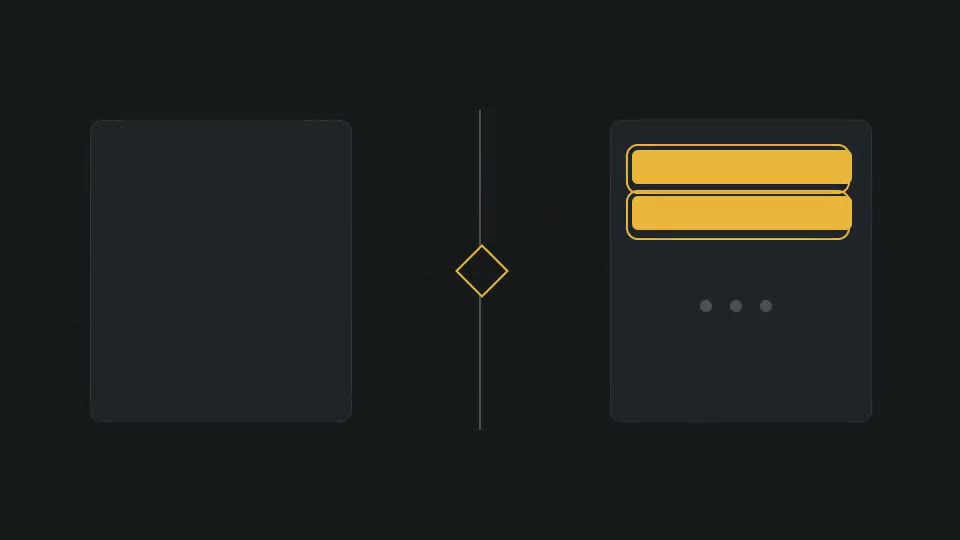

Dosyalarınızdan bakılacak işler.
Kule Pro, SAP dışa aktarımlarınızı okur ve bugün ilgilenmeniz gereken stok kalemlerini, siparişleri ve tedarikçileri sıraya koyar. Her bulgu, kimin bakacağını ve nereye bakacağını da söyler.
Aşağıdaki liste, uydurulmuş verilerden oluşan örnek bir dosyanın çıktısıdır.
- Stok K-1042 kritik stoktaPlanlayıcı · SAP stok listesi
- Sipariş S-7781: mal kabul ile fatura uyuşmuyorSatın almacı · SAP sipariş ve fatura kayıtları
- Tedarikçi T-203 teslimatı yine geciktirdiSatın almacı · tedarikçi performansı
- Ölü stok K-0917 uzun süredir hareket görmüyorPlanlayıcı · stok yaşı raporu
- FBL1N V-310 açık kalemleri mutabakatsızMuhasebe · satıcı açık kalemleri
Kule Pro ne yapar?
Kule Pro, bir işletmenin stok, sipariş, mal kabul ve fatura dosyalarını okur. Dosyayı yüklersiniz, yedi analiz modülü bu verileri kendi kurallarıyla tarar ve sonuçlar bakılacak işlerin listesine dönüşür. Liste hangi kalemin bittiğini, hangi siparişte tutar farkı olduğunu ve hangi tedarikçinin geciktiğini gösterir. Her bulgunun yanında kimin bakacağı ve SAP'de nereye gidileceği yazılıdır. Hesaplar açık kurallara dayanır ve varsayılan kurulumda dil modeli çağrılmaz. Ölçümler örnek dosyalar ve açık veriyle yapıldı; gerçek bir SAP çıktısıyla henüz denenmedi.
Hata, dosyayı açtığınız gün görünsün
Stok, sipariş, mal kabul ve fatura çoğu işletmede ayrı tablolarda tutulur. Bir tutarsızlık genellikle ay sonunda, ödeme yapıldıktan sonra fark edilir. Kule Pro aynı kontrolleri dosyayı yüklediğiniz anda yapar, böylece sorun ay sonunu beklemeden görünür.
Dosyadan karara

- YükleStok, sipariş, mal kabul, fatura ve SAP dışa aktarımlarını yüklersiniz; SAP çıktıları CSV ya da .xlsx olabilir.
- OkuHer satır okunur. Okunamayan satır atlanmaz; numarası ve nedeni listede görünür.
- HesaplaYedi analiz modülü stok durumu, sipariş anomalisi, talep tahmini, tedarikçi skoru, üçlü eşleştirme, OEE ve FBL1N açık kalem mutabakatını hesaplar.
- KararKarar motoru sipariş önerisi ve öncelik listesi çıkarır. Her bulgu, kimin bakacağıyla birlikte gelir.
Kimin için
Planlayıcı stoka, satın almacı sipariş ve faturaya, yönetici özete bakar. Bir siparişle mal kabul arasındaki tutar farkı satın almacıya gider; bitmek üzere olan bir kalem planlayıcının önüne düşer. Her bulgu, onu düzeltebilecek rolün önüne gelir.
Hesaplar açık kurallara dayanır
Hesaplar açık, tekrarlanabilir kurallara dayanır. Varsayılan kurulumda hiçbir modül dil modeli çağırmaz. Bir sonucun nereden geldiğini, hangi kuralın onu ürettiğini kuralların kendisinde arayabilirsiniz.
Sayılar nereden geliyor
Ürün 1682 otomatik test, 37 yollu bir API ve 18 bilerek konmuş hatanın 18'ini bulan bir deneme paketiyle ölçüldü. Sayılar 16 Kasım 2026 koşusundan alındı. Ayrıntılar ürün sayfasında.
Eval kasetten oynatılır; model kalitesini ölçmez. 12 bilinen açık vaka gözlendi ve kapanmadı.